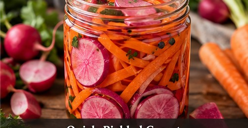

Asian-inspired · Pickles · Serves: 1 pint jar Time: 15 minutes + 30 minutes resting
Quick-Pickled Carrots & Purple Radishes

Ingredients
- 2 medium, thin matchsticks Carrots or coins
- 3, thinly sliced Purple plum radishes
- 1/2 cup Rice vinegar
- 1/2 cup Warm water
- 1 1/2 Tbsp Sugar
- 1 1/2 tsp Kosher salt
Instructions
- Pack carrots and radishes into a clean pint jar or covered container.
- Stir vinegar, warm water, sugar and salt until dissolved.
- Pour brine over vegetables, pressing them below the liquid.
- Rest 30 minutes before using. Refrigerate once cooled.